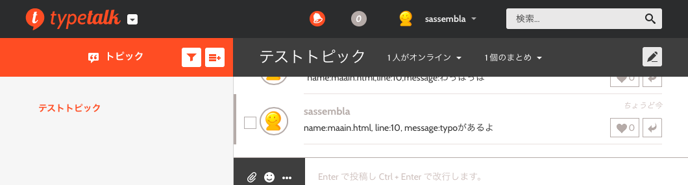

Typetalk Hackでチャットからコードハイライトするやつを作った話
概要
コレに参加。
Typetalk Hack Tokyo
http://www.zusaar.com/event/4757003
Typetalk上の書き込みから、
Sublime Text上のコードをハイライトしたり開かせたりするやつを作った。
TypeHighlight
https://github.com/sassembla/TypeHighlight
Typetalkからいろいろ引っこ抜いてくる部分をCredentialごとガッと削ってupしてある。
中身
1.SublimeSocketプラグイン入りのSublime Textを開く
2.今回作ったhtmlをブラウザ(Safari, Chrome, 他)で開く
すると、ブラウザがTypetalkの特定の部屋へのポーリングを適当に開始して、
特定フォーマットの書き込みがあったら、Sublime Text上でハイライトされる。
たとえばTypetalk上で

とか書くと、
Sublime Text 上の該当の名前のファイルの該当行が点灯する。
クリックすると、メッセージが出る。

もし、該当のファイルがまだ開いていなかったら、
別ファイル上からopenさせるポップアップを表示できる。

強制Openとかも可能だけどやってない。
会場のwifiに頼らなかったので、128kb/s環境下での初のハッカソンだった。
完遂できてよかった、
感想
hack(HHVM)でのTypetalkクライアントあり、
SmalltalkでのTypetalkクライアントあり、
Typetalk4sあり、
https://github.com/daiksy/typetalk4s
、、おっといけねこっちじゃなかったテヘヘー こっちこっち（嫌がらせ
https://github.com/seratch/typetalk-hack-app
by @seratch_ja さん
Typetalk4s.orgあり、
by @yusuke
なんなんだこの濃さは、、！！
なぜXXXX(意外性のある言語の名前を入れてね！)でそんなことを、、！
ハック時間 1時間くらいだよ？ なんて変態密度なんだ。
そう思うハッカソンだった。
ステマとブーメラン
Typetalk最高！！ Streaming APIガンバッてください！！